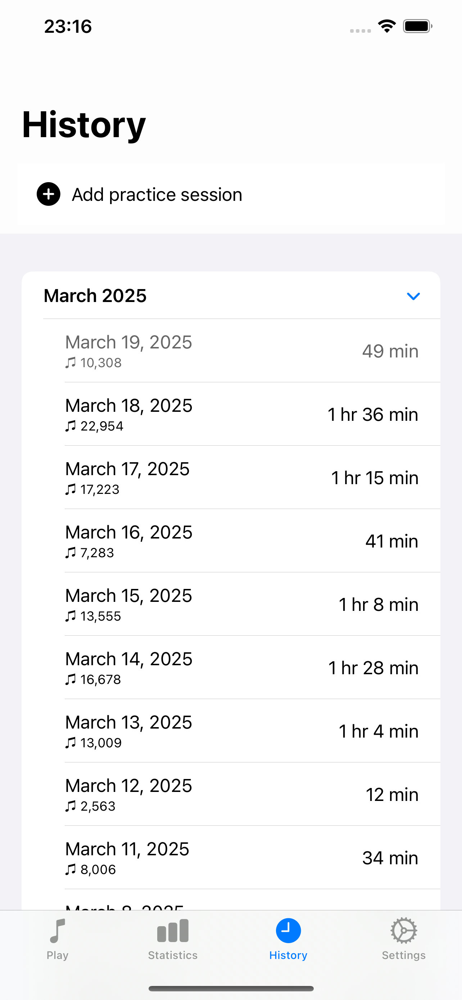
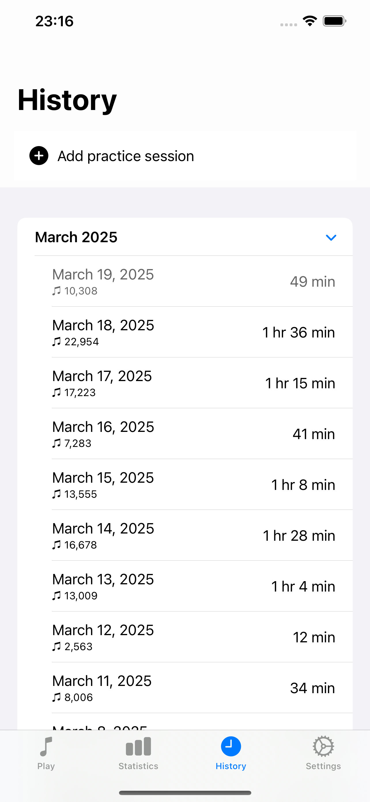
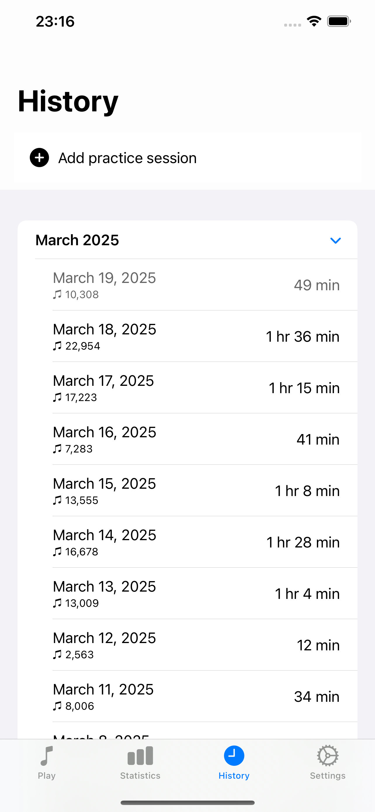

Why Piano Tracker?
Regular practice is the key to mastery.
Whether you're a beginner establishing practice habits or an advanced pianist tracking your development, Piano Tracker provides the tools you need to succeed.

Stay motivated
with visible progress tracking
Build consistency
through streak monitoring
Focus on practice
while app tracks the time for you
Improve faster
with data-driven insights
One-time purchase
no subscriptions or in-app purchases
Simple setup
connect your piano and start practicing